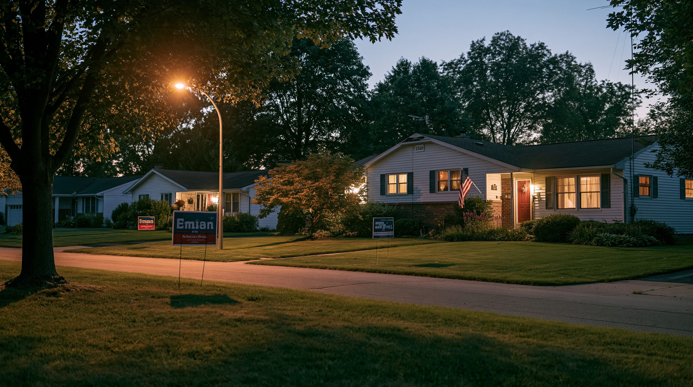

01論点 — 大統領は変わらないのに、なぜ「審判」と呼ばれるのか
2026年11月3日、投票日まで残り6週間。アメリカでは大統領を選ぶ選挙ではなく、議会を選び直す「中間選挙」が行われる。トランプ大統領の任期は2029年1月まであり、この選挙で大統領の椅子が入れ替わることはない。それでもこの選挙が「大統領への審判」と呼ばれるのには理由がある。
アメリカの議会は下院と上院の二つの院からなる。下院は435議席全部、上院は100議席のうち33議席が今回の対象だ。現在は下院・上院とも共和党が多数派を握っている。世論調査では民主党が優勢に立っており、下院はわずか3議席の入れ替えで多数派が逆転する僅差の議席配分になっている。
大統領はまだ2年の任期を残しているのに、なぜこの選挙が「審判」と呼ばれるのか。議会の勢力が変わると、トランプ政権が進める政策のうち、何が止まり、何がそのまま続くのか。
では、議会の勢力が変わると具体的に何が起きるのか。下院を民主党が奪えば、各委員会の主導権も民主党側に移る。委員会は「召喚状」を使って、政権関係者に証言や書類の提出を強制でき、それを公開の場で問いただす「公聴会」を開くことができる。すでに民主党側は、政権に関わるいくつかの疑問を調べる準備を進めていると報じられている。トランプ大統領一族の事業取引、すでに廃止された政権効率化省（DOGE）が活動していた間に何をしていたか、外国政府から大統領が利益を得ることを禁じる新しい法律——こうした点が調査・立法の対象になるとみられている。一方、共和党が両院を守り切れば、関税や不法移民の強制送還といった今の政策は、議会からのブレーキなしで続くことになる。
02タイムライン — 地図の書き換え合戦から投票日まで
今回の中間選挙をめぐっては、投票そのものより先に「選挙区の地図」をめぐる攻防が続いていた。テキサス州・カリフォルニア州・ミズーリ州、それぞれの動きを中心に追う。
トランプ大統領の要請を受け、共和党が多数派のテキサス州議会は、10年に一度の国勢調査を待たずに下院の選挙区地図を書き換えた。狙われたのはヒューストン・ダラス・南部テキサスにある民主党優位の5つの選挙区だ。具体的には、黒人など特定の人種の住民が多い地域を一つの選挙区に囲い込んでしまう手法と、同じような住民をあえて複数の選挙区に分散させて、どの選挙区でも少数派にしてしまう手法が使われた。テキサスの下院議席(38議席)は当時共和党25・民主党12だったが、この変更によって共和党は最大30議席まで増やせると見られていた。
カリフォルニア州は、テキサスの動きに対抗する目的で住民投票「プロポジション50」を実施し、64%の賛成で民主党に有利な新しい選挙区地図を承認した。同じ日に行われたバージニア州とニュージャージー州の知事選では、いずれも民主党の候補が勝利し、翌年の中間選挙を占う最初の指標として注目された。
3人の判事のうち1人はトランプ大統領自身が任命した人物だったが、裁判所はテキサスの新しい地図について、人種を理由にした不当な区割り変更だと判断した。判決は、2026年の選挙を2021年に作られた古い地図で行うようテキサス州に命じた。
連邦地方裁判所は、この新しい地図を「使ってはいけない」と命じていた。テキサス州の求めに応じ、連邦最高裁判所は6対3の判断で、その命令の効力を一時的に止めた。候補者の届け出締め切りが迫っていたこともあり、この決定によって2026年の選挙は共和党に有利なテキサスの新地図（民主党優位の選挙区の住民構成を組み替えた地図）で行われる見通しになった。
共和党側はカリフォルニアの新しい地図についても使用差し止めを求めていたが、連邦最高裁判所はこの申し立てを退けた。この時点で、共和党に有利なテキサスの地図と、民主党に有利なカリフォルニアの地図が、どちらも2026年の選挙で使われる見通しになった。
12月の判断は一時的な措置だったが、この日の判決で連邦最高裁判所はテキサスの新地図を正式に認め、使用差し止めを命じていた下級審の判断を覆した。ケーガン・ソトマイヨル・ジャクソンの3判事は反対意見を述べた。これにより、共和党に有利なテキサスの地図と、民主党に有利なカリフォルニアの地図が、どちらも2026年の選挙でそのまま使われることが確定した。
ミズーリ州でも2025年、共和党が主導し、民主党寄りの選挙区を解体する新しい地図が成立していた。だが有権者団体が30万人分を超える署名を集めて住民投票を求め、ミズーリ州最高裁は9月3日、この住民投票を認め、2026年の選挙は前の地図で行うよう命じた。ミズーリ州側は連邦最高裁に緊急の停止を求めたが、9月8日に却下され、新地図は使われないことが決まった。テキサス・カリフォルニアに続き、任期途中の地図変更をめぐる攻防は複数の州に広がっている。
投票日を6週間後に控えたこの時点で、下院にどちらの政党の候補へ投票するかを尋ねる世論調査では、民主党が共和党を6〜8ポイント上回っている。関税や物価高への不満が、この差の背景にあるとみられている。
下院435議席と上院33議席の当落が決まる。接戦州を中心に、確定結果が判明するまで数日から数週間かかる見通しだ。
03各勢力の視点 — 議会の勢力が変わることを、誰が望み、誰が望まないか
「下院を奪還すべきか」という一つの問いをめぐって、党派だけでなく、有権者や国外の関係者も、それぞれ違う立場から選挙の行方を見ている。5つの視点から見る。
| 立場 | 下院奪還への姿勢 | 主な根拠 | 最大の関心事 |
|---|---|---|---|
| 共和党・トランプ政権 | 強く反対（続投を望む） | 関税・移民取締りの実績、景気減速は一時的とみる | 両院での過半数維持 |
| 民主党 | 強く推進 | 生活費高騰の責任追及、歯止め役としての奪還 | 下院での過半数と調査権の獲得 |
| 無党派・スイング層の有権者 | 消極的・中間的 | 物価高への不満はあるが民主党への期待は薄い | 暮らし向きの改善そのもの |
| ウクライナ・欧州の同盟国 | 推進寄り（期待） | 議会の勢力が軍事支援予算を左右する | 支援方針の継続性 |
| 関税の影響を受ける経済界 | 中立〜期待 | コスト増加、議会によるブレーキへの期待 | 関税政策の先行きの見通し |

04データ・統計 — 歴史のパターンと、今の世論調査
中間選挙には、大統領の支持率と議席の増減をめぐる長年のパターンがある。まず現在の議席構成を確認したうえで、そのパターンと投票日6週間前の世論調査を並べて見る。
下院・上院の現在の議席構成
点線は過半数ライン（50%）。下院は共和党218・民主党214・無所属1・欠員2（無所属は共和党会派に残留）、上院は共和党53・民主党45・無所属2（無所属は民主党会派）。2026年9月時点。出典：米下院プレスギャラリー「Party Breakdown」、米上院「Party Division」。
大統領支持率と中間選挙での下院議席減（平均）
1946年以降の中間選挙が対象。支持率50%未満の大統領は下院で平均37議席を失い、50%以上の大統領は平均14議席の減少にとどまった。出典：Gallup「Midterm Seat Loss Averages 37 for Unpopular Presidents」。
下院投票の意向（政党支持、2026年9月時点）
2026年9月時点の世論調査平均（このサイクルで民主党の最大リード）。出典：RealClearPolling「2026 Generic Congressional Vote」。
05深掘り — この選挙は、何を止めて何を止めないのか
※ ここから先は、ここまでの事実にもとづく筆者個人の見解です。
議会の勢力がどちらに転んでも、トランプ大統領が2029年まで在任し続けることは変わらない。変わるのは、政権にブレーキをかけられるかどうかという一点だけだ。